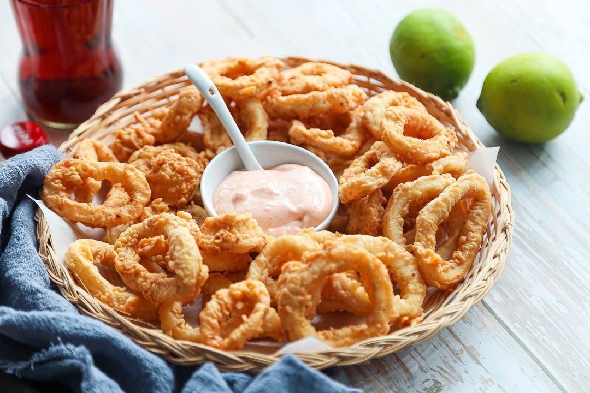

Appetizers

Pares Empanada
consists of a crispy crust filled with beef, rice, and soup, and is named after the pairing of beef and rice

Lumpiang Shanghai
a Filipino-style spring roll made of ground pork, chicken, or beef filling wrapped in thin crepes called lumpia wrappers, rolled into thin cylindrical shapes, cut into bite-size lengths, and deep-fried to golden perfection

Calamares
Calamares is a Filipino-style deep-fried squid dish made of batter-coated squid served with different condiments depending on the country. In the Philippines, they use a mix of catsup and mayonnaise.